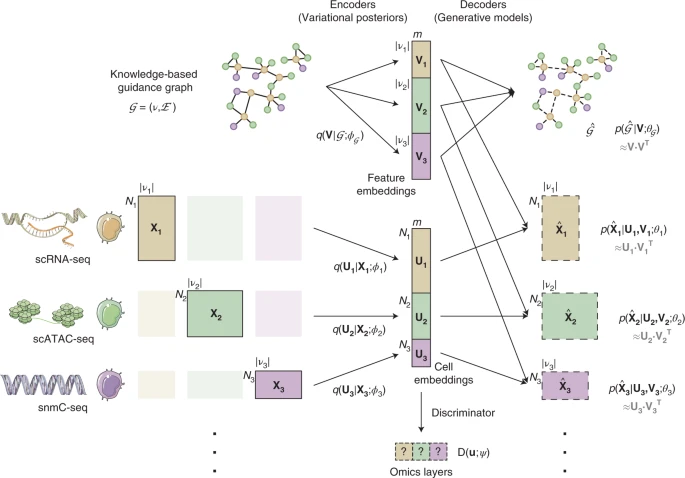
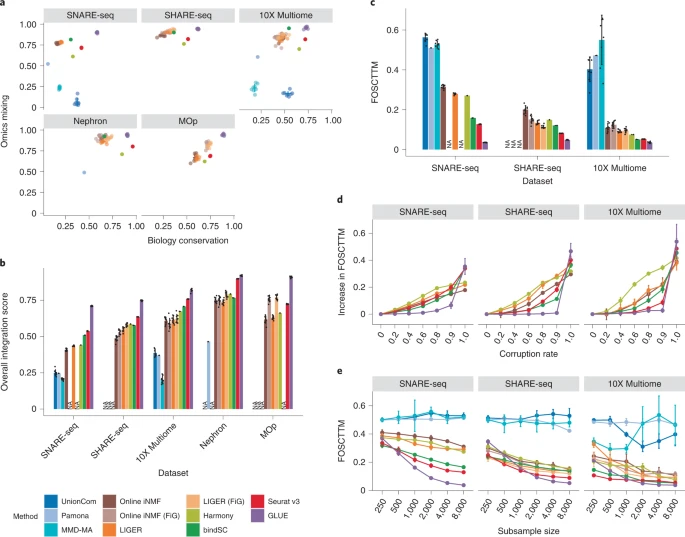
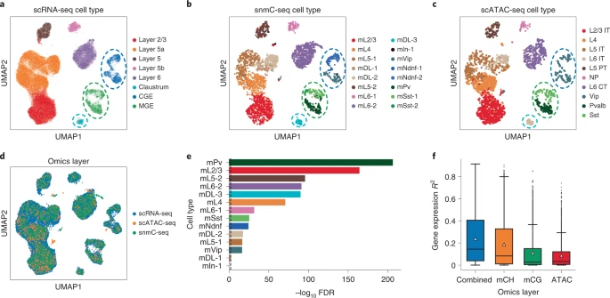
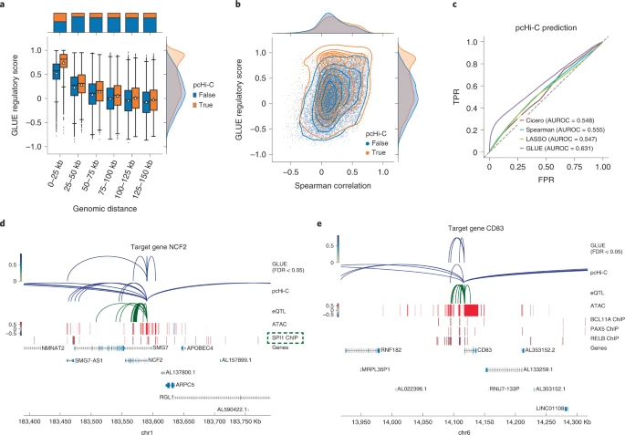
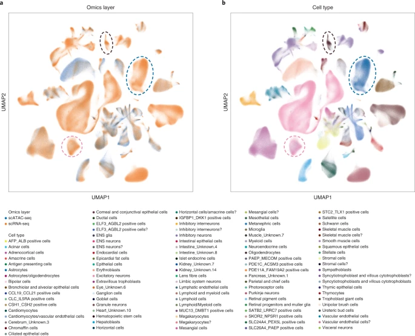

本文献笔记由网页剪藏扩展整理而来；原始剪藏见 02 文献精读与汇报库/01_sources/papers/web_clips/Multi-omics single-cell data integration and regulatory inference with graph-linked embedding。
中文标题#
基于图关联统一嵌入的单细胞多组学数据整合与调控推断
中文摘要#
尽管单细胞中同步测量多种组学模态的实验方法已经出现，但大多数单细胞数据集仍仅包含单一模态。整合多模态组学数据的主要障碍在于，不同组学层通常具有不同的特征空间。本文提出计算框架 GLUE（graph-linked unified embedding，图关联统一嵌入），通过显式建模跨组学层的调控相互作用来弥合这一差距。系统基准测试表明，在异构单细胞多组学数据整合方面，GLUE 比现有最先进方法更准确、更稳健且更具可扩展性。作者将 GLUE 应用于三组学整合、整合式调控推断以及数百万细胞规模的多组学人类细胞图谱构建等多种挑战性任务，并显示其能够纠正既有注释。GLUE 采用模块化设计，可灵活扩展和增强以适应新的分析任务。完整软件包已公开发布于 https://github.com/gao-lab/GLUE。该工作表明，通过建模调控相互作用，可以在图谱级尺度上实现不同单细胞数据模态的整合。
一、背景与研究意义#
研究背景#
单细胞组学技术已经从单一转录组测量，扩展到染色质可及性、DNA 甲基化以及多模态联合测量。现实问题在于：绝大多数公开数据仍是非配对的单模态数据，不同模态之间既没有一一对应的细胞，也缺乏统一的特征空间。比如 scRNA-seq 的特征是基因表达，而 scATAC-seq 的特征是开放染色质区域，直接对齐难度很高。
已有方法通常走两条路线：一是把不同模态强行转换到同一特征空间，再做整合；二是用流形对齐或矩阵分解实现间接匹配。但前者容易损失信息，后者往往难以扩展到三种及以上组学层，或难以处理百万细胞级别的数据。
科学问题#
- 如何在不同组学层特征空间不一致的前提下，稳定整合非配对单细胞多组学数据？
- 如何把先验调控知识真正纳入整合过程，而不仅仅作为预处理映射规则？
- 如何在完成跨模态整合的同时，进一步做调控关系推断与 atlas 级别扩展？
二、研究思路（技术路线）#
作者提出 GLUE（graph-linked unified embedding）框架，核心思想是把“指导图（guidance graph）”作为跨组学桥梁，把不同模态的特征连接到同一个图结构中，再联合学习特征嵌入和细胞嵌入。
技术路线可概括为：
- 为每一种组学分别建立一个自编码器，保留各自数据分布特性。
- 构建指导图，把基因、ATAC peak、DNA 甲基化特征等通过先验调控关系连接起来。
- 通过图自编码器学习特征嵌入，再通过对抗对齐让不同组学中的细胞嵌入进入同一潜在空间。
- 在统一嵌入空间中做跨模态对齐、标签转移、调控评分估计与 atlas 级分析。
作者随后用 5 个层面的证据验证该框架：
- 框架设计本身是否合理；
- 在多套标准数据上的基准表现是否优于现有方法；
- 是否能扩展到三组学整合；
- 是否能用于顺式调控推断；
- 是否能扩展到百万细胞级图谱整合。
三、主要结果#
Result 1 | GLUE 通过“指导图 + 统一嵌入”解决非配对多组学整合问题#
核心发现： GLUE 将不同组学的特征先映射到图结构，再联合学习特征嵌入与细胞嵌入，从而避免了简单特征转换导致的信息损失，也为后续调控推断保留了结构基础。
主要证据：
- 每个组学层使用独立的变分自编码器，适配各自特征空间和数据分布。
- 指导图中的节点对应不同组学特征，边表示跨层调控关系，如“ATAC peak—gene”或“甲基化—gene”。
- 细胞嵌入通过对抗判别器进行跨模态对齐，保证不同组学中的相同细胞状态落入相近潜在空间。
方法价值： 该设计把“先验调控知识”从预处理阶段推进到了模型主体中，是 GLUE 区别于普通整合算法的关键。

图注： Figure 1. GLUE 框架示意图。图中展示了指导图、不同组学专属编码器/解码器、特征嵌入、细胞嵌入，以及用于跨模态对齐的判别器共同组成统一学习框架。
Result 2 | GLUE 在系统基准测试中兼具准确性、鲁棒性和可扩展性#
核心发现： 在多个配对与非配对 scRNA-seq / scATAC-seq 数据集上，GLUE 在生物学保留、组学混合和单细胞配对精度三个维度都优于多种主流方法。
主要证据：
- 在 SNARE-seq、SHARE-seq、10X Multiome、Nephron、MOp 等数据集上，GLUE 的总体整合得分持续排名第一。
- FOSCTTM 指标显示，GLUE 在单细胞精细对齐上误差最低，相比次优方法在多个数据集上均有明显下降。
- 即使把指导图中的相互作用随机破坏到很高比例，GLUE 的性能仍较稳定，说明对先验知识错误有较强鲁棒性。
- 在中等规模数据上表现最好；当样本数低于约 1000 个细胞时，性能开始明显受影响，揭示其对数据规模存在一定依赖。
方法价值： GLUE 不是只在“某一个指标”上占优，而是在整合精度、鲁棒性和规模适应性三方面取得平衡。

图注： Figure 2. 系统基准测试结果。包括总体整合得分、FOSCTTM、对错误先验知识的鲁棒性，以及在不同细胞数量下的表现变化，显示 GLUE 在多维度均优于基线方法。
Result 3 | GLUE 可以扩展到三组学整合并提升细胞注释质量#
核心发现： GLUE 不仅能整合 scRNA-seq 和 scATAC-seq，还能进一步纳入 DNA 甲基化层，实现 RNA、ATAC、methylation 的三组学对齐，并细化细胞亚群注释。
主要证据：
- 在成年小鼠皮层数据中，GLUE 成功整合了基因表达、染色质可及性和 DNA 甲基化三层数据。
- 模型允许在指导图中对边设置正负号，因此可以自然表达“甲基化与表达负相关、ATAC 与表达正相关”这类异质调控关系。
- 通过统一嵌入进行标签转移后，作者识别出多个更细粒度的神经元亚群，修正了原始注释中较粗的分类。
- 三组学联合建模还揭示了不同表观遗传层对基因表达预测的非冗余贡献，其中 mCH 对神经元基因表达的解释力尤其突出。
方法价值： GLUE 证明了“多于两层”的整合是可行的，而且不只是技术上可整合，还能产出新的生物学解释。

图注： Figure 3. 小鼠皮层三组学整合。图中展示了三种组学在统一嵌入空间中的对齐结果、标签转移后的细胞类型映射，以及不同表观遗传层对表达预测的贡献比较。
Result 4 | GLUE 的统一嵌入可用于整合式调控推断#
核心发现： GLUE 不仅整合细胞，还能基于特征嵌入的余弦相似度给出调控评分，并在顺式调控关系预测中优于共可及性和相关性方法。
主要证据：
- 在 PBMC 多组学数据中，作者构建了包含长程峰—基因连接的指导图，并将特征嵌入相似度定义为调控评分。
- 调控评分与基因组距离呈负相关、与经验峰—基因相关性呈正相关，符合生物学预期。
- 在 pcHi-C 和 eQTL 外部证据验证下，GLUE 调控评分比 Cicero、LASSO 或简单相关性更能预测真实的调控互作。
- 作者还进一步推导了 TF—靶基因网络，并发现其与 TRRUST v2 手工整理网络的一致性更高。
方法价值： 这一步让 GLUE 从“整合算法”升级为“整合 + 调控推断”框架，是该文最具方法学延展性的贡献之一。

图注： Figure 4. PBMC 中的整合式调控推断。图中展示调控评分与距离、相关性的关系，以及利用 pcHi-C / eQTL 验证调控预测有效性，并给出 NCF2 与 CD83 的实例。
Result 5 | GLUE 支持百万细胞级 atlas 整合并可修正原始注释#
核心发现： GLUE 可扩展到数百万细胞的人类多组学图谱整合任务，并能在不损失单细胞分辨率的前提下纠正原始注释中的偏差。
主要证据：
- 作者把人类胎儿基因表达图谱与染色质可及性图谱整合到同一多组学 atlas 中。
- 依赖小批量优化、分阶段训练和元细胞预训练策略，GLUE 保持了较好的扩展性。
- 整合后发现部分原始注释存在偏差，例如某些被注释为星形胶质相关的细胞更接近放射状胶质祖细胞或兴奋性神经元谱系。
- 对照方法中，online iNMF 虽可扩展，但整合质量较差；Seurat v3 则无法在完整规模上有效运行。
方法价值： 该结果证明 GLUE 不只是实验室规模方法，而是具备 atlas 级应用潜力。

图注： Figure 5. 多组学人类细胞图谱整合。图中展示了 GLUE 在百万细胞级别的人类 RNA / ATAC 图谱对齐效果及其对原始细胞注释的修正能力。
四、方法亮点与机制总结#
方法亮点#
- 指导图真正进入模型主体：不是先做 peak-to-gene 映射后就丢弃，而是持续参与嵌入学习。
- 组学层特异性自编码器：避免粗暴统一分布假设，保留不同数据类型的统计特征。
- 对抗对齐 + 图嵌入联合优化：让细胞对齐与特征关系建模同步进行。
- 天然支持多层组学：通过图结构增添节点与带符号边，即可扩展到三组学甚至更多层。
- 整合与推断一体化：统一嵌入既服务于细胞对齐，也服务于 peak-gene / TF-target 调控评分计算。
可以记住的“GLUE 机制”#
可以把 GLUE 记成一句话：
先用指导图把不同组学的特征连接起来，再用图嵌入和对抗学习把不同组学的细胞放进同一个潜在空间，最后在这个统一空间中做标签转移和调控推断。
五、研究亮点与局限#
研究亮点#
- 方法创新清晰：不是简单改进现有整合器，而是提出“图关联统一嵌入”这一更通用的建模框架。
- 验证链完整：从双组学、三组学、调控推断到 atlas 级场景，形成层层递进的证据体系。
- 兼顾算法与生物学问题：既有 benchmark 指标，又有真实生物学案例和外部实验数据支持。
- 开源价值高：作者提供了可直接使用的 scglue 软件包与教程，利于后续方法复现和再开发。
研究局限#
- 对数据规模存在依赖：在极小样本（<1000 cells）时，神经网络方法可能欠训练。
- 对指导图质量仍有依赖：虽然对错误先验有鲁棒性，但完全错误或过度缺失的先验仍会限制结果上限。
- 调控推断偏全局：论文讨论中也指出，当前模型推断的是整个输入数据集上的平均调控关系，时空特异性仍需进一步细化。
- atlas 任务训练成本较高：相比传统方法，模型训练与调参仍需要一定计算资源与工程门槛。
六、对当前研究的启发#
- 如果后续做口腔组织的 RNA + ATAC 或多模态单细胞整合，GLUE 是非常值得优先对比的方法基线。
- 如果关注转录因子调控网络或 peak-gene 关系，GLUE 比单独跑 Cicero / 相关性分析更有一体化优势。
- 如果项目中存在跨批次、跨组织、跨平台图谱整合需求，可以借鉴其“元细胞预训练 + 单细胞微调”的思路。
- 对 wiki 沉淀来说，后续可以把这篇文章归入“单细胞多组学整合方法”“调控推断方法”“图神经网络在生信中的应用”三个主题节点。